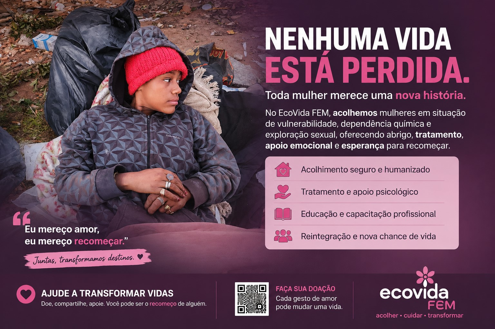

🏠 Um local seguro
Moradia temporária, ambiente protegido, rotina organizada e acolhimento com dignidade.
Como muitas outras jovens, Pepa representa uma vida que merece uma oportunidade para recomeçar. O EcoVida Feminino nasce para construir um caminho de acolhimento para mulheres que desejam reconstruir suas vidas com segurança, respeito e novas oportunidades.
Nosso propósito é criar uma rede real de proteção, moradia temporária, alimentação, fortalecimento comunitário, encaminhamento profissional, capacitação e geração de renda.

O EcoVida Feminino é uma frente do Instituto EcoVida voltada para mulheres em situação de vulnerabilidade, rua, dependência, abandono, exploração ou risco social. A missão é construir um caminho possível, humano, protegido e organizado para o recomeço.
Moradia temporária, ambiente protegido, rotina organizada e acolhimento com dignidade.
Fortalecimento comunitário, aproximação familiar e encaminhamento para profissionais e serviços responsáveis.
Comida, banho, roupas, cobertores, itens de higiene e cuidados básicos para iniciar uma nova etapa.
Oficinas, cursos, jardinagem, reciclagem, limpeza, cozinha, artesanato e geração de renda.
Não é apenas ajuda emergencial. É a construção gradual de uma vida com estrutura, responsabilidade e autonomia.
Famílias, voluntários, empresas, profissionais, doadores e comunidade trabalhando juntos.
Pepa representa a urgência de olhar para mulheres que muitas vezes são vistas apenas pela situação em que se encontram, e não pela história, pelo sofrimento e pelo potencial que ainda carregam.
Sua imagem se torna um chamado para que a sociedade pare de julgar de longe e comece a construir oportunidades reais de acolhimento, proteção, tratamento responsável, aprendizado e reintegração.
O EcoVida Feminino não promete soluções fáceis. O propósito é reunir pessoas sérias para construir um caminho seguro, humano e possível.
A imagem é utilizada como símbolo da campanha e da necessidade de acolhimento, sempre preservando dignidade, respeito e responsabilidade.
Procuramos pessoas dispostas a colaborar com tempo, conhecimento, organização e presença. O voluntariado deverá respeitar regras, limites, privacidade e a proteção das mulheres.
Não é necessário ter experiência em todas as áreas. O primeiro passo é realizar o cadastro e informar como você pode ajudar.
Este espaço é para mães, pais, irmãos, avós ou responsáveis que procuram orientação para uma mulher em situação de vulnerabilidade. O preenchimento ajuda o EcoVida a entender o caso e organizar um primeiro contato com cuidado.
Cada doação, parceria, indicação ou gesto de solidariedade pode ajudar a construir uma estrutura real de acolhimento.
Valores e materiais ajudam na construção da estrutura, alimentação, higiene, transporte e atividades.
Casa, sítio, chácara, terreno ou imóvel parado podem se tornar uma base de acolhimento.
Seu tempo, conhecimento, profissão ou talento podem fazer diferença dentro de uma função organizada.
Cestas básicas, refeições, água, alimentos, frutas, legumes e itens de cozinha.
Absorventes, sabonetes, shampoo, toalhas, roupas femininas, cobertores e calçados.
Cursos, oficinas, mentorias, vagas de trabalho, apoio jurídico e serviços profissionais.
A construção será feita com organização, responsabilidade, proteção e uma rede séria de apoio.
Casa, sítio, chácara ou terreno para estruturar o acolhimento feminino.
Quartos, cozinha, banho, roupas, alimentação, privacidade e segurança.
Voluntários, famílias, empresas, profissionais, saúde e assistência.
Proteção, rotina, escuta, capacitação e caminho de autonomia.
Você pode doar, ceder um espaço, cadastrar-se como voluntário, indicar uma oportunidade de trabalho ou ajudar uma família a encontrar orientação.